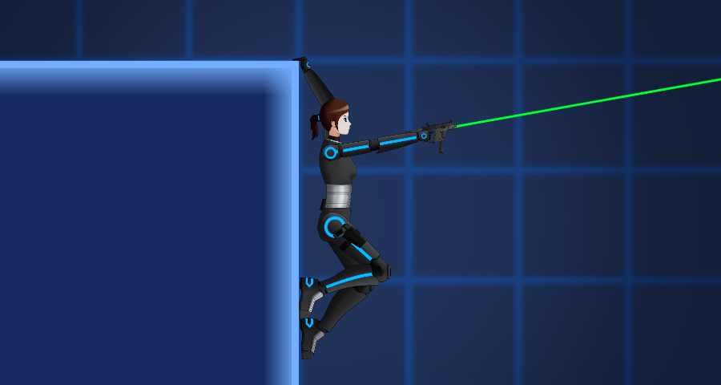

The greatest challenge in developing the prototype was determining how the game
would feel to play, I had to develop how the character controller was going to work,
whether it was using Unity’s 2D physics system for collision and velocity or using
raycasts for collision and calculating velocity manually. At the time, Unity’s 2D
features were more limited and I opted for the latter option for snappier classic
feeling character. I eventually found a motor component by the name of
Platformer Controller 2D which I tweaked the code of
to further tweak the movement mechanics. These changes involved changing the required
input of wall jumps to resemble a similar control method to titles such as
Super Metroid and implementing a ledge grab and climb mechanic so the character could
fight off enemies while holding onto a ledge between moments of platforming. My main
focus with the movement mechanics was to allow the character to be able to defend
themselves in as many states as possible, the only exceptions being climbing ledges,
dashing or sliding. During my time working on altering the motor code, I also fixed
an issue with collision which was raised on the Github page

Another issue arose upon deciding on the animation method, 2D skeleton animation.
This was chosen to best incorporate characters with high resolution art by creating a texture
compiled with animatable parts to save on memory. Animating as a skeleton also allowed
the ability to animate in layers as well as interpolate between animations smoothly.
I chose Spine as my animation software due to its wide array of features,
multiplatform usage and active community. However, Spine didn’t integrate with Unity’s
animation tree so I had to develop my own animation logic in a separate component that
would inform the SkeletonAnimator component what animation to play on what animation layer.
The solution involved using an MVC style approach where the AnimatorController
(View in this case) would have access to player state fed from a main PlayerController
that took in inputs and fed it to the motor (Model) to utilise movement. On top of this,
the PlayerController would manage elements exclusive to the player such as weapon inventory.
Working on this solo project has given me a chance to grow in a variety of areas
and allowed me to define my own solutions in those areas.
Asset Packages Used: